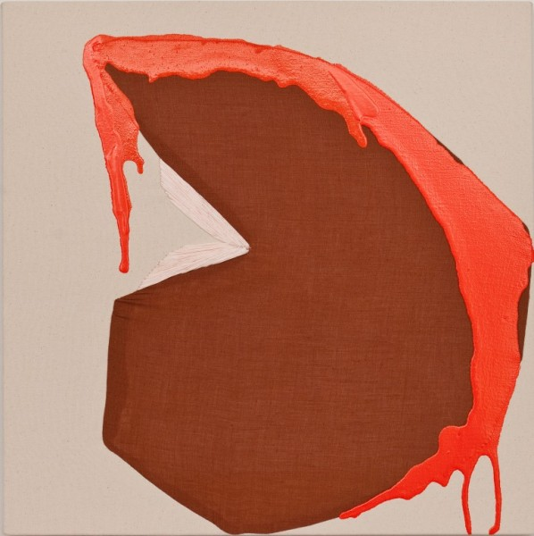
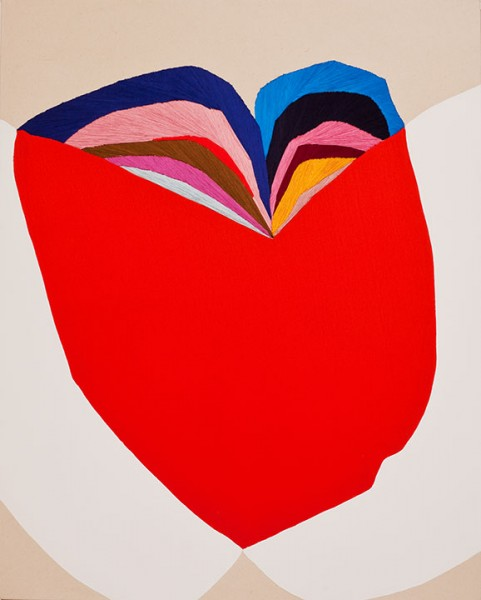

-
A Sweet Tooth & Some Cavities: Amanda Valdez at the Denny Gallery
by Jeffrey Kirkwood February 13, 2013
Valdez’s I Poison Myself, 2012. courtesy of Denny Gallery, New York.
In a meditation on the ‘seductiveness’ of the big toe, Georges Bataille wrote in 1929 —
human life entails, in fact, the rage of seeing oneself as a back and forth movement from refuse to ideal, and from the ideal to refuse — a rage that is easily directed against an organ as base as the foot.
Against this caliginous member of Acéphal’s tendency to luxuriate in real abjection, Amanda Valdez’s finely executed assemblages discover the joyous excesses of suggestive, corporeal forms (none of them feet), even when broken, unsettled, and then conspicuously sutured together. Her latest show at Denny Gallery, A Taste of Us, finds affinity with what Bataille describes in the work’s abiding insistence on multiple, simultaneous levels of materiality that produce an overabundance of colorful, shifting visual associations, that ultimately prompt a return to a consideration of the rudimentary, very often bodily, conditions that give rise those associations. The experience of seeing the pieces is more joyous than including a quote from Bataille might suggest. Rather than the ‘rage’ of seeing grotesque fetish objects denuded, the teeth, totems, and orifices the pieces call to mind emerge from a riot of pinks and patchworks that allow us to see the candied sweetness of excess instead of the painful cavities it causes.
With the exception of a series of small, early studies on paper, Valdez’s works construct, in the most literal sense, their frame of reference by sewing together canvas and fabrics that constitute lively shapes. These forms are then embellished with acrylic, gesso, or are painstaking embroidered to produce additional larger shapes, whose appearance changes like Moiré patterns depending on where one is standing. Swatches of iridescent orange or olive fabric are joined with untreated canvas, sewn together to either conceal or reveal the seams, and participate in a larger Gestalt with irregular painted geometries and shapes that arise from tightly crafted and variegated stitching. In the case of the embroidering, one can see the individual needle-strokes assembled in arrays that echo and coalesce with other shapes in the picture, while drawing sharp distinction with the other methods of production and calling attention to the individual hand movements required for the overall effect. This invokes not only a physical repetition inherent in the process of building a space of signification, but also its connection to the additional repetitions involved in the proliferation of a visual vocabulary manufactured through the recurrence of the fortune cookie shapes (for PG audiences) featured in many of the pictures. As such, the pictures offer an insight into scales and methods of signification, with each thread visible and lost in the ascending orders of repetition from handcraft to quotable visual abstractions.
It is in this mutual dependence and opposition between the materials out of which the pieces are ‘built’ and the overdetermined shapes they create that the show really does its heavy lifting. Everything in the pictures suggests the physical craft of its genesis, from the apparent seams and choice of fabrics to the crudely textured paint deployed as if by a hedonistic sous chef. In the larger pieces, there are no frames beyond the stretcher bars the cut-outs and shapes extend all the way to and sometimes beyond. The edges serve to emphasize the inseparability of the associations produced by the pictorial elements and the very space in which they are allowed to exist, from the modes and materials of their assembly. Signification and abstraction are bound to craft — a fact made more apparent by the inclusion of the smaller studies, where the imperfect, hasty orthogonality of pencil-drawn frames around the shapes emphasize the potential amendment or erasure of a frame altogether — something that only gains a sense of permanence when it is made indistinguishable from the materials themselves in her larger pieces.
Valdez’s Fang Legs, 2012. courtesy of Denny Gallery, New York.
What becomes delightfully evident in the show is that there is no such thing as a neutral channel for the signifier — no transparency, and no transcendental escape from the fundamentality of the material. However, in contradistinction to previous movements in modernism occupied with the problem of the materiality of the signifier, such as the decidedly political Arte Povera of the 1960s, which concentrate on the vulgarity, brutality, or excretory character of the physical and capitalistic sources of meaning, Valdez seems to enthusiastically embrace that we have imperfect bodies that can be dismembered and repaired, as do our signs and symbols. In Fang Legs for instance, one is confronted by what looks like an enormous molar painted with black gesso, with electric pink roots, glazed on the top like a pastry with black paint that creates the barest contrast with the larger black shape, and (perhaps unnecessary) embroidering between the two pink roots. There is already a frustration in the piece, at the level of naming, in seeing the tooth as a tooth, in that it has been playfully titled to direct one’s view to the possibility of seeing it as ‘fang legs,’ something which neither exists, nor do we have a proper language for, but nonetheless requires that we can call to mind an image of bodily recombination, and momentarily reconsider the immediacy of the jump to seeing it as the monster of mastication it presents itself as. Already, the notion of ‘fang legs’ duplicates the Frankensteinian logic of the works, stitching together disparate parts of the body at the level of abstraction, demonstrating the silly impurity of the polysemic universe paintings can create. The titles of many of the pieces replicate this gesture, transforming genitals and giant hearts into broad, almost literary themes like Dwells Among Us or Good to be King with a grandiosity out of step with the “craftiness” and blitheness of the pieces’ visual register.
Like many of the works in the show, Fang Legs uses traditional painterly tools for purifying the frame of interruptions to representation or abstraction precisely in order to form the representational and abstract shapes. Gesso, which would normally be used as a canvas treatment for creating a black or white uniformity on which one could then begin to paint, is the tooth, and the additional dripping black paint gloss on the top shows us how the paint and the preparations for painting are barely distinct — and moreover, it is the paint here that appears frivolous. To a similar end, in this work as with nearly every other in the show, the canvas that is sewn together with fabrics is left untreated, giving it a burlap quality that leaves all of the rough textural qualities intact in a refusal to make the pictures safe for undisturbed signification. In pieces like I Poison Myself and those that function more like slapdash quilts constructed from irregular rectangles of various fabrics, such as Temple , the crosshatched textures of the textiles are warped in the process of stretching them, forcing some level of acknowledgement that representation and abstraction are equally processes of production, and even crafts.
Valdez’s Dwells Among Us, 2011. courtesy of Denny Gallery, New York.
The conversation between pieces maximizes such a recognition in the variable expertise of handwork applied in each. Dwells Among Us displays a virtuosity of handiwork that meticulously hides and blends the seams and embroiders according to patterns that are almost machine-like (despite the fact that the image is clearly evocative of the most productive of all organic, human cavities), while Good to be King uses dark stitching that is underscored in a brilliantly superfluous three-part seam on the right side with no apparent pictorial purpose except to show stitching as stitching.
This extraneous fissure in Good to be King captures much of what the show effectively hammers away at: the fantasy of signification without seams. From the primitive and normally pragmatic crafts (like sewing) showcased for the purpose of creating overdetermined shapes that look like body parts, and which involve a clear reference to the historical modes of human production and economy, there is a sense that the meaning allowed out of excesses and beyond simple utilitarian purpose is not only already a part of all human activity, but is even a matter of physiological necessity.
At the level of the materials this is executed through unrelenting focus on the methods used in the assemblages. And at the pictorial level it takes place through bodily shapes divorced from reference to a bodily whole that allow no certainty about what they “actually” represent, which are themselves even broken or incomplete as shapes. It is at these points of breakage, in the case, for instance, of Only One, that the paint — the ultimate historical implement for representation — appears as an overflow or secretion of the craft elements. If granted my own personal excess to once more return to Bataille, we see that these excesses are perhaps at the core of human meaning production, where he wrote that the surplus of resources “which societies have constantly at their disposal at certain points, at certain times, cannot be the object of a complete appropriation…but the squandering of this surplus becomes an object of appropriation” (The Accursed Share, Vol. 1, 1991). We do not always eat because we are hungry or build for shelter. But that is what makes living, and this show, sweet.